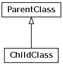
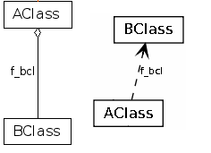
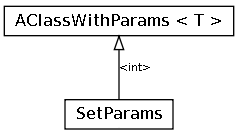
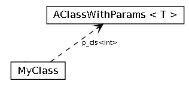
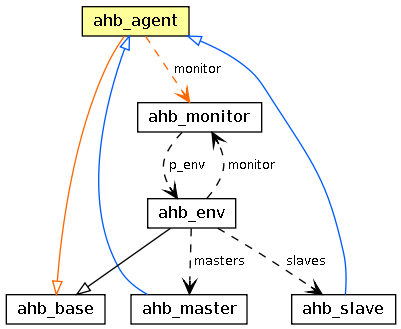

Inheritance = ChildClass inherits from ParentClass.

Association = AClass points to BClass (has a field f_bcl of type BClass).

Inheritance with parameters = SetParams inherits from AClassWithParams#(int) (sets T to int).

Association with parameters = MyClass has a field p_cls of type AClassWithParams#(int) (sets T to int).

Outgoing connections (inheritance or associations) from a selected class are colored with orange. Incoming connections (inheritance or associations) to a selected class are colored with blue.